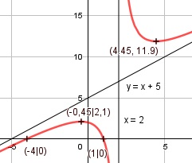

Aufgabe 113 x2 + 3x - 4 f(x) = -------------- x - 2 Quotientenregel erste Ableitung: u = x2 + 3x - 4, u' = 2x + 3 v = x - 2, v' = 1 (2x + 3) * (x - 2) - 1 + (x2 + 3x - 4) f'(x) = ----------------------------------------- (x - 2)2 2x2 - x - 6 - x2 - 3x + 4 f'(x) = ----------------------------- (x - 2)2 x2 - 4x - 2 f'(x) = -------------- (x - 2)2 Quotientenregel zweite Ableitung: u = x2 - 4x - 2, u' = 2x - 4 v = (x - 2)2 Kettenregel: v' = 2 * (x - 2) (2x-4)*(x-2)2 - 2*(x-2)*(x2 - 4x - 2) f''(x) = -------------------------------------- (x - 2)4 (x-2)*[(2x-4)(x-2) - 2*(x2 - 4x - 2) f''(x) = --------------------------------------- (x - 2)4 2x2 - 8x + 8 - 2x2 + 8x + 4 f''(x) = ----------------------------- (x - 2)3 12 f''(x) = --------- (x - 2)3 Zur Beurteilung, ob f'''(x) ≠ 0 : (Begründung siehe Aufgabe 105) u = 12, u' = 0 u' 0 f'''(x) = --- = ---------- = 0 für alle x ≠ 2 v (x - 2)3 Polstellen, Nenner = 0: x - 2 = 0 |+2 x = 2 Nenner = 0 und Zähler = 22 + 3 * 2 - 4 = 6 ≠ 0 --> senkrechte Asymptote Definitionsbereich: -∞ < x < ∞, x ≠ 2 Zählergrad größer als Nennergrad --> Näherungskurve 6 f(x) = x2 + 3x - 4 : x - 2 = x + 5 + ------ -(x2 - 2x) x - 2 ----------- 5x - 4 -(5x - 10) ---------- 6 6 x + 5 + ------ geht gegen x + 5 für x --> ± ∞ x - 2 Wertebereich: -∞ < f(x) ≤ 2,1 und 11,9 ≤ f(x) < ∞ (siehe Extrempunkte) Symmetrie zur y-Achse bzw. zum Punkt (0|0): (-x)2 + 3(-x) - 4 x2 - 3x - 4 f(-x) = -------------------- = ------------- (-x) - 2 -x - 2 x2 - 3x - 4 f(-x) = ------------- = ≠ f(x) -(x + 2) --> keine Achsensymmetrie x2 - 3x - 4 -f(-x) = ------------- = ≠ f(x) x + 2 --> keine Punktsymmetrie Nullstellen: f(x) = 0 x2 + 3x - 4 f(x) = -------------- |*(x - 2) x - 2 x2 + 3x - 4 = 0 p, q - Formel p = 3, q = -4 x1,2 = x1,2 = -1,5 ± x1,2 = -1,5 ± x1,2 = -1,5 ± 2,5 x1 = 1 x2 = -4 N1(1|0), N2(-4|0) Schnittpunkt mit der y-Achse: x = 0 02 + 3 * 0 - 4 f(0) = ----------------- = 2 0 - 2 Sy(0|2) Extrempunkte: f'(x) = 0 x2 - 4x - 2 -------------- = 0 |*(x - 2)2 (x - 2)2 x2 - 4x - 2 = 0 p, q - Formel p = -4, q = -2 x1,2 = x1,2 = 2 ± x1,2 = 2 ± x1,2 = 2 ± 2,45 x1 = 4,45 4,452 + 3 * 4,45 - 4 f(4,45) = ---------------------- = 11,9 4,45 - 2 x2 = -0,45 (-0,45)2 + 3 * (-0,45) - 4 f(-0,45) = ---------------------------- = 2,1 -0,45 - 2 12 f''(4,45) = ------------- > 0 --> (4,45 - 2)3 Tiefpunkt (4,45|11,9) 12 f''(-0,45) = -------------- < 0 --> (-0,45 - 2)3 Hochpunkt(-0,45|2,1) Wendepunkte: f''(x) = 0 12 --------- = 0 |*(x - 2)3 (x - 2)3 12 = 0 Widerspruch --> keine Wendepunkte Graph:
